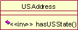
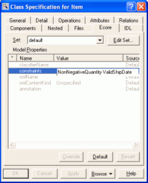
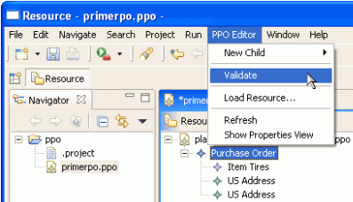
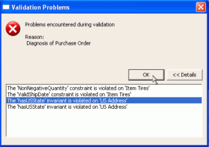

EMF Validation Overview
Last updated: June 23, 2005
This paper presents a basic overview of EMF's validation framework and gives a few code samples to ease implementation. For
a more complete description of all the features of EMF, refer to
EMF: Eclipse Modeling
Framework, Second Edition (Addison-Wesley Professional, 2008) or to the
Javadoc for the framework classes themselves.
Introduction
Want to ensure your model's data conforms to constraints placed on that data? In three quick steps, this overview will give you an idea of how EMF's validation framework will let you do just that.
Definitions
|
Invariant - Implemented as class method, defined on the model. Considered a "stronger" statement about validity than a constraint. Eg., hasUSState()

Figure 1. Rose Model - Invariant
|
 |
|
|
Named Constraint - Implemented as a method on an external validator class, not on the model itself. Considered a "weaker" statement about validity than an invariant. Eg., NonNegativeQuantity, ValidShipDate

Figure 2. Rose Model - Constraint
|
|
|
|
Schema Based Constraint - as with Named Constraint, but defined within schema. Eg., 'quantity must be an int between 0 and 100'. Since these types of constraints have known behaviours, no additional work is required to implement them: all simple type constraints will be automatically implemented by the code generator.
<xsd:element name="quantity">
<xsd:simpleType>
<xsd:restriction base="xsd:int">
<xsd:minInclusive value="0"/>
<xsd:maxInclusive value="100"/>
</xsd:restriction>
</xsd:simpleType>
</xsd:element>
|
Contents
contents
Step 1: Create Constraints in the Model
As with all EMF development, you can start from annotated Java, XML Schema, or Rose models. The method for defining constraints depends on your model source.
For Rose, the <<inv>> stereotype on an operation represents an invariant. For an example of this, see Figure 1 above.
To add a constraint using Rose 98, open your model, then select a class (such as "Item" in the example discussed here). Right-click and select "Open Specification" (or double-click "Item"). Then select the "Ecore" tab and click the constraints field to add them, as in Figure 2 above.
For Schema, you can define a <xsd:restriction/> (as above) or named constraint:
<xsd:complexType name="Item">
<xsd:annotation>
<xsd:appinfo source="http://www.eclipse.org/emf/2002/Ecore"
ecore:key="constraints">
NonNegativeQuantity ValidShipDate
</xsd:appinfo>
</xsd:annotation>
...
</xsd:complexType>
For annotated Java, you can define invariants and constraints like this:
|
Invariant
/**
* @model
*/
public interface USAddress
{
...
/**
* @model
*/
boolean hasUSState(
DiagnosticChain diagnostics,
Map context);
...
}
|
|
|
|
Constraint
/**
* @model
annotation="http://www.eclipse.org/emf/2002/Ecore
constraints='NonNegativeQuantity ValidShipDate'"
*/
public interface Item
{
...
}
|
contents
Step 2: Define Constraints
Import your model into EMF, then generate code as in Steps 2 - 3 of the Generating an EMF Model tutorial
Generated code will look something like this:
|
Invariant, com.example.ppo.impl.USAddressImpl
public boolean hasUSState(
DiagnosticChain diagnostics,
Map context)
{
// TODO: implement this method
// -> specify the condition that violates
// the invariant
// -> verify the details of the diagnostic,
// including severity and message
// Ensure that you remove @generated or
// mark it @generated NOT
if (false)
{
if (diagnostics != null)
{
diagnostics.add(
new BasicDiagnostic(
Diagnostic.ERROR,
PPOValidator.DIAGNOSTIC_SOURCE,
PPOValidator.US_ADDRESS__HAS_US_STATE,
EcorePlugin.INSTANCE.getString(
"_UI_GenericInvariant_diagnostic",
new Object[] {
"hasUSState",
EObjectValidator.getObjectLabel(this,
context)}),
new Object [] { this }));
}
return false;
}
return true;
}
|
|
|
|
Constraint, com.example.ppo.util.PPOValidator
public boolean validateItem_ValidShipDate(
Item item, DiagnosticChain diagnostics,
Map context)
{
// TODO implement the constraint
// -> specify the condition that violates
// the constraint
// -> verify the diagnostic details,
// including severity, code, and message
// Ensure that you remove @generated or
// mark it @generated NOT
if (false)
{
if (diagnostics != null)
{
diagnostics.add(
new BasicDiagnostic(
Diagnostic.ERROR,
DIAGNOSTIC_SOURCE,
0,
EcorePlugin.INSTANCE.getString(
"_UI_GenericConstraint_diagnostic",
new Object[] {
"ValidShipDate",
getObjectLabel(item, context) }),
new Object[] { item }));
}
return false;
}
return true;
}
|
Code is also generated in the validator, eg., in com.example.ppo.util.PPOValidator, for each defined invariant, but these method(s) simply delegate to the invariant method(s) on the objects themselves, eg.:
public boolean validateUSAddress_hasUSState(USAddress usAddress,
DiagnosticChain diagnostics, Map context)
{
return usAddress.hasUSState(diagnostics, context);
}
In both cases, generated code must be modified by hand in order to explain to EMF how to implement the invariant or constraint. For the first case, change the first line from:
if (false)
to
if ("US".equals(getCountry()) && getState() == null).
contents
Step 3: Generate & Run
Once you're done defining constraints, launch a new workspace. For details, see Step 4 of the Generating an EMF Model tutorial.
Your model will now have a 'Validate' item on its editor menu.

Figure 3. Start Validation from UI
With invalid data in the model, validation fails with a dialog like that in Figure 4.

Figure 4. Validation Problems Dialog
Selecting one of the diagnostics in the dialog before clicking the OK button will cause the object that caused the violation to be selected in the editor. Markers for these diagnostics will also appear in Eclipse's Problems view.
contents
Advanced Topics
To implement validation in another way, such as when saving or opening a file, you need only do something like:
public static boolean validateObject(EObject eObject)
{
Diagnostic diagnostic = Diagnostician.INSTANCE.validate(eObject);
return diagnostic.getSeverity() == Diagnostic.OK;
}
Using a Diagnostician, the result of the evaluation is calculated based on a Diagnostic, not a simple boolean return. This allows you to decide which severity represents a failure, and to expose the information about the constraints and invariants that were not satisfied. As an example, if you were interested only in errors and warnings, you could do something like this:
public static boolean validateObject(EObject eObject)
{
Diagnostic diagnostic = Diagnostician.INSTANCE.validate(eObject);
if (diagnostic.getSeverity() == Diagnostic.ERROR ||
diagnostic.getSeverity() == Diagnostic.WARNING)
{
System.err.println(diagnostic.getMessage());
for (Iterator i=diagnostic.getChildren().iterator(); i.hasNext();)
{
Diagnostic childDiagnostic = (Diagnostic)i.next();
switch (childDiagnostic.getSeverity())
{
case Diagnostic.ERROR:
case Diagnostic.WARNING:
System.err.println("\t" + childDiagnostic.getMessage());
}
}
return false;
}
return true;
}
Note that under the covers using Diagnostician.INSTANCE.validate(), you get some intrinsic Ecore constraint validation thanks to EObjectValidator, the base for all generated package validator classes. These include:
- The actual multiplicities of the attributes and references match the bounds defined in the model.
- The defined data type of the attributes is respected.
- Any cross referenced objects are contained in resources.
- Every proxy is properly resolved.